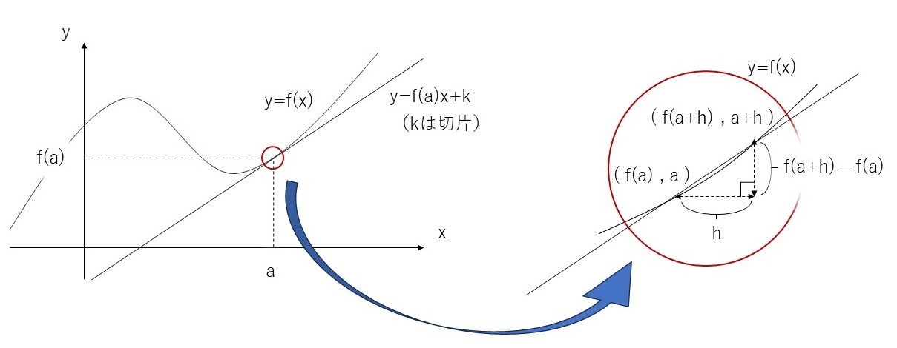

＜定義＞
$関数y=f(x)は区間Iで定義されているとし、a\in Iとする。$
- $$ \lim_{ h \to 0 } \frac{f(a+h)-f(a)}{h}
=\displaystyle \lim_{x \to a} \frac{f(x)-f(a)}{x-a}$$
が存在する（有限な値として定まる）とき
$f(x)が点a$のおいて微分可能であるといい、この極限値を$f'(a)と表し、点aにおけるf(x)の$微分係数という。

- $$\displaystyle \lim_{x\to a-0} \frac{f(x)-f(a)}{x-a} ,\lim_{x\to a+0} \frac{f(x)-f(a)}{x-a}$$
$が存在するとき、それぞれf(x)は点aにおいて$
左微分可能、右微分可能であるといい、これらの極限値をそれぞれ$f'_- (a)、f'_+ (a)$で表し、$f(x)$の左微分係数、右微分係数という。
＜注意＞
$$f(x)が点aで微分可能\Longleftrightarrow f'_- (a)=f'_+ (a)$$